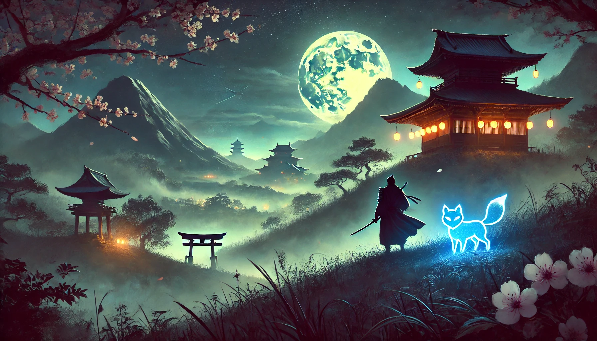
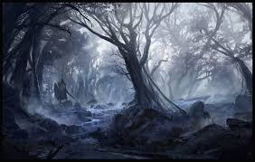

The Setting
World & Setting
A mythological Japan-inspired world of haunted forests, ancient temples, and fractured spirit realms where gods, demons, and cursed warriors walk together.



Haunted Forests
Ancient woodland where corrupted Kami still roam — silence is survival.
Ancient Temples
Crumbling shrines that once housed divine power, now battlegrounds for fallen gods.
Spirit Realms
Fractured planes of existence beyond the physical world — where time dissolves.